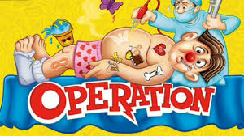
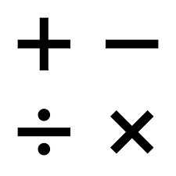

This is my site. It is about operations. If you click on the stuff above, you can view the pages.
"Operation" is a word with many different meanings. We shall explore them on this home page.
Above is an image of the "Operation" board game. This is one of the more common uses of operation, depicting a medical operation.
However, this is not the type of operation that we are concerned with on this website. Math operations are used to do things in mathematics.
Math operations use a lot of signs. They are above.
Fun fact: the word "operation" almost starts and ends in o. Another word that almost starts and ends in "o" is "oreos."
OREOs are very cool and tasty.
Operations are cool. You should learn more about them by checking out the rest of this site.